Markdown简易指南
Markdown简易指南
文档标题
文档的标题级别通过#数量的多少来衡量，#号数量越多则级别越大，但字号越小。最后一个#号和标题文字之间有一个空格，且文档最多支持六级标题，具体示例如下：
三级标题
四级标题
五级标题
创建列表
创建无序列表
在英文输入法下，通过输入- 符号创建无序列表。
- 无序列表1
- 无序列表2
创建有序列表
在英文输入法下，通过输入1. 数字标记创建有序列表
- 有序列表1
- 有序列表2
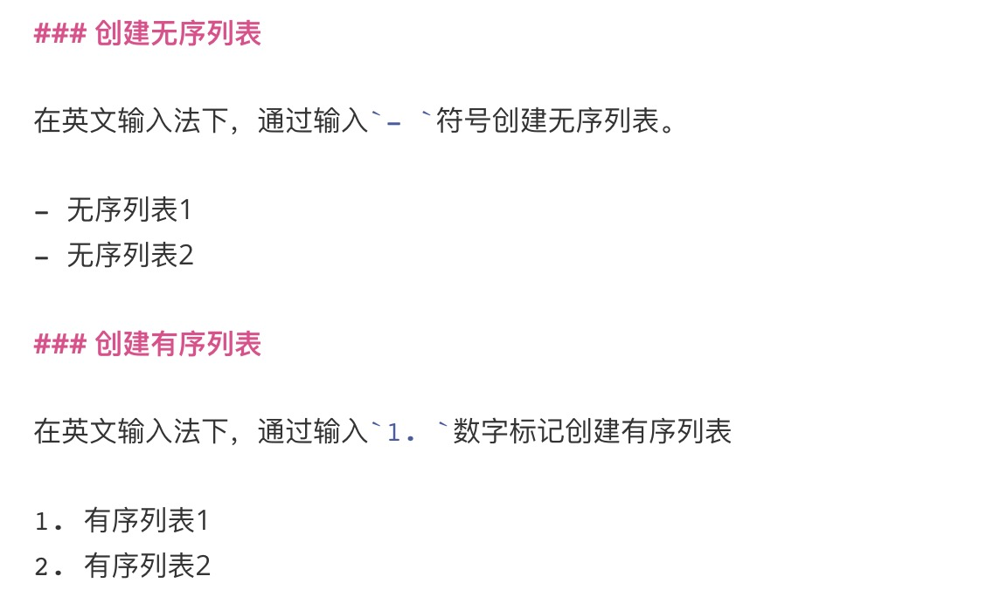
列表嵌套
再完成一种列表的创建之后回车下一行（可能需要删除掉下一行自动添加的同级列表标记），键入Tap创建嵌套列表，嵌套列表的类型由Tap后输入的- 或者1. 符号决定。
- 有序列表1
- 无序列表1.1
- 无序列表1.2
- 有序列表2
- 有序列表2.1
- 有序列表2.2
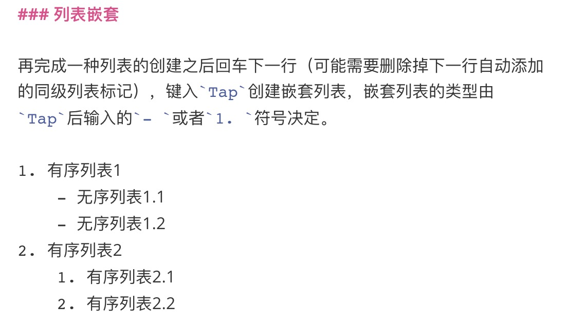
创建任务清单列表
在英文输入法下通过键入- [ ] 创建未完成的任务清单；通过键入- [x] 创建已完成的任务清单。任务清单同样可以嵌套，方法同样是利用Tap缩进决定嵌套级别，然后通过规定符号标记确定嵌套列表的类型。
- [ ] 这是一个未完成的任务：锻炼
- 手臂肌肉锻炼
- 篮球技巧联系
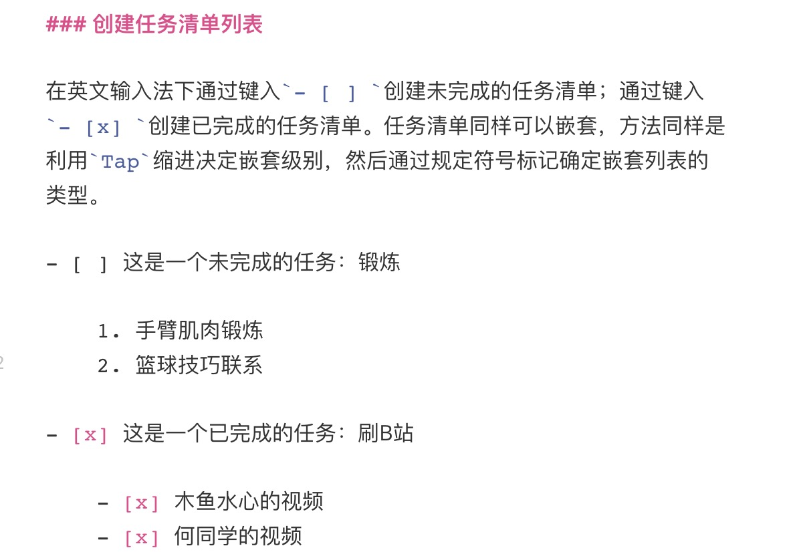
创建分割线
可以发现在创建文档标题时，一二级标题下面会自动存在分割线，而其他的标题下面没有分割线，而通过三个以上的*或者-符号可以手动创建分割线。
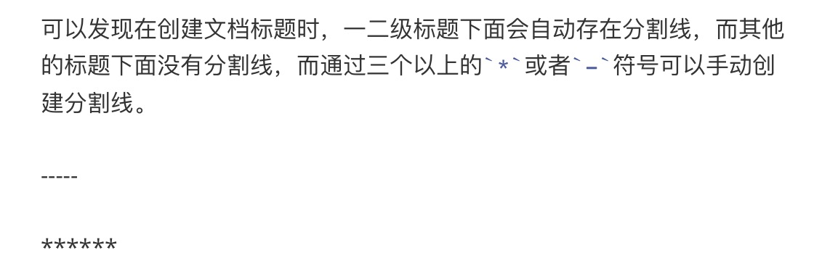
创建表格
在英文输入法下，通过|和-的组合可以创建表格。
| 表头1 | 表头2 | 表头3 |
|---|---|---|
| 内容1 | 内容2 | 内容3 |
| 内容1 | 内容2 | 内容3 |
| 序号 | 标题 | 网址 |
|---|---|---|
| 01 | 百度 | https://www.baidu.com |
| 02 | 谷歌 | https://www.google.com |
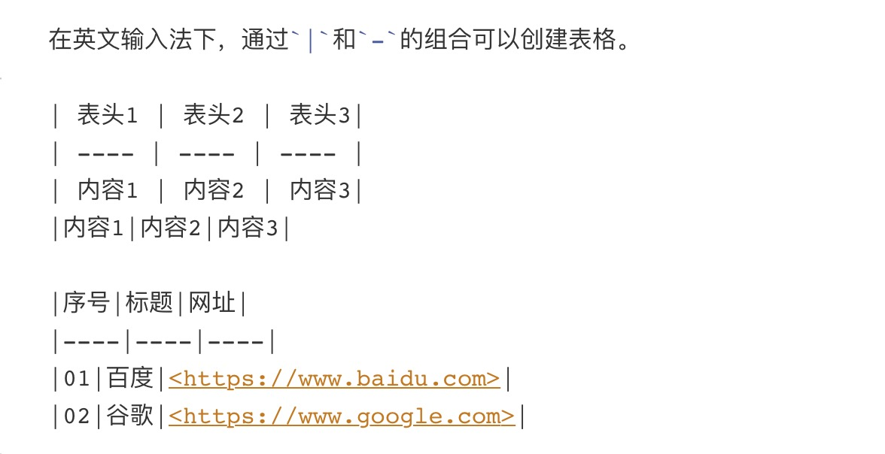
表格的对齐格式
通过在----两天添加英文冒号可以指定表格每列的对齐方式，:----、:----:和----:分别表示左对齐、居中对齐和右对齐。
| 序号（左对齐） | 标题（居中对齐） | 网址（右对齐） |
|---|---|---|
| 01 | 百度 | https://www.baidu.com |
| 02 | 谷歌 | https://www.google.com |
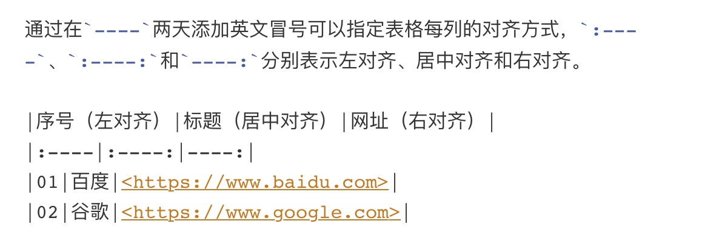
插入图片
通过在文档中插入图片，图片网址可以是本地地址也可以是网络图片地址，图片描述可以省略。


插入链接
通过[链接说明](网址链接)在文档中插入网址连接，一般来说链接说明不能省略。

多次引用同一个网址，可以为网址指定索引标签
通过[索引标签]:网址连接创建网址的索引标签，然后在使用[链接说明][索引标签]索引网址。
这里是我们常用的几个网址连接： 谷歌 、百度和 GitHub
插入目录锚点（实现文章内部点击跳转）
通过[目录名称](#索引标签)生成目录锚点，索引标签必须和要跳转的标题章节名称对应（注：该方法只能跳转到文档标题开头处，正文不能跳转）。如果图方便生成文档目录的话可以直接采用[TOC]命令生成当前文档的目录。
目标检测入门算法：
YOLO算法简介
Faster R-CNN算法简介
SSD算法简介
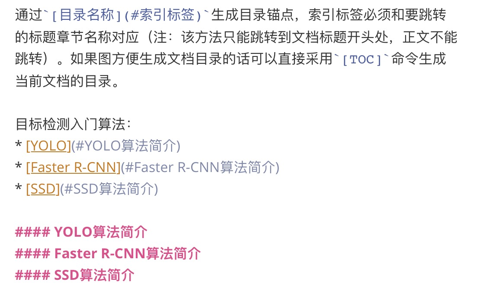
快捷生成目录
[TOC]
插入代码块
插入行内代码
通过使用成对的左上撇号（`）插入行内代码。
就如train_func所示，巴拉巴拉…
插入整段代码块
通过使用成对的三个左上撇号（`）在文档中插入代码块，同时在第一组左上撇号的后面输入代码块使用的脚本语言例如python。
1 | |
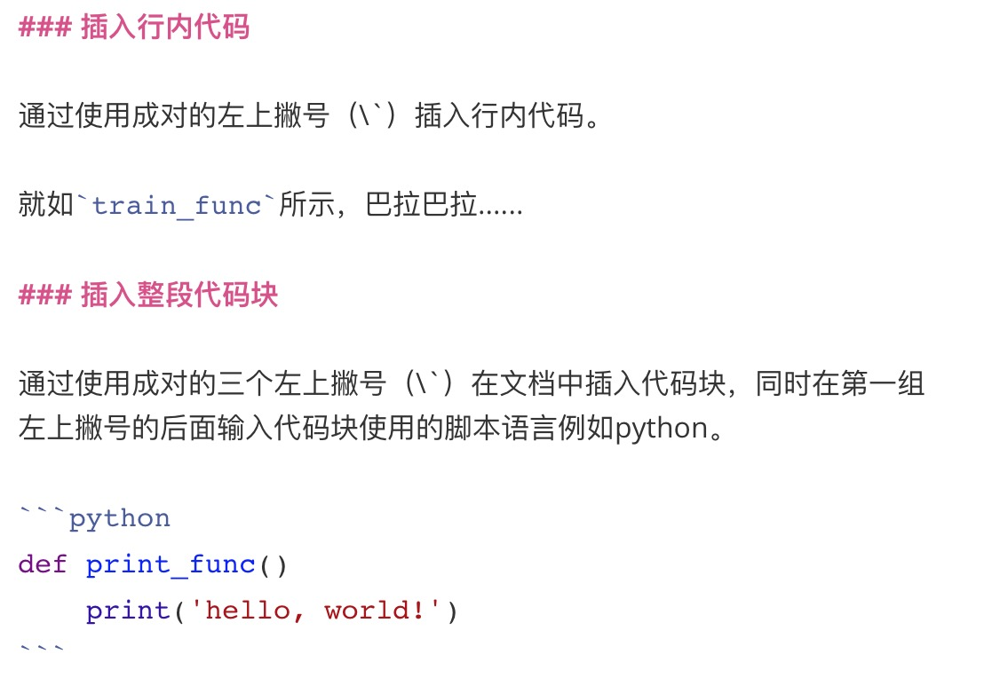
插入公式
分数：$$ f(x,y) = \frac{x^2}{y^3} $$
省略号：$$ f(x_1, x_2, \ldots, x_n) = x_1 + x_2 + \cdots + x_n $$
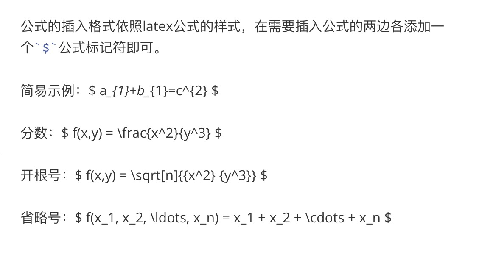
标记引用段落
某几句话或者一句话需要特别标注是可以采用“引用”样式，使用方法是在需要引用的文字前面添加> 符号。
这句话很重要，引用起来。
可以嵌套引用
这是第一级引用、
这是第二级引用
这是第三级引用
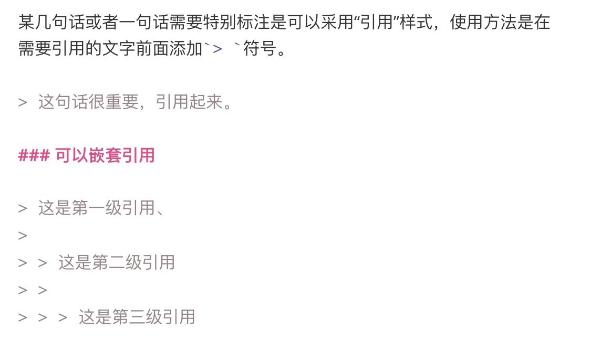
常用标记
下面介绍正文的一些处理样式包括粗体、斜体、删除线、文本高亮、下划线、上下标等等。
粗体、斜体、==高亮==、删除线、下划线、我是^上标^、我是~下标~

转义符号
因为在Markdown中星号、加减号、括号等都有相应的指示作用，因此如果需要展示使用这些符号本身是需要用到转义字符\。
\
’
*
_
{}
[]
()
+
.
!
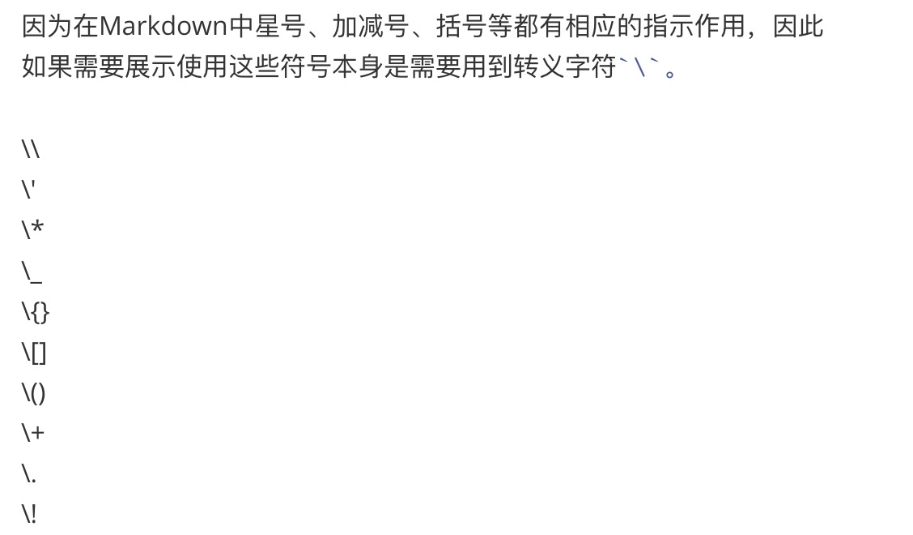
插入emoji表情
插入emoji表情的方法如下，即在成对的:中间填入表情对应的英文名称即可。
🥶
🥵
😄
😆
👏
更多表情符号请参考这个链接
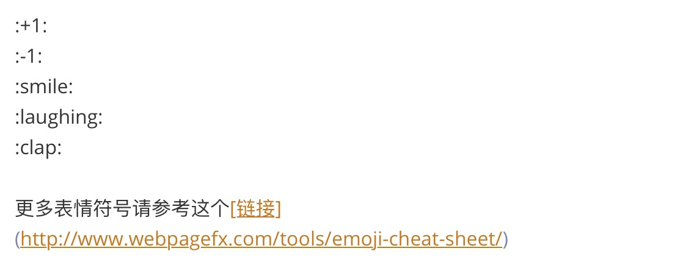
注意事项
通常在正文与列表项、表格项、文档标题之间都需要留有空行。
Post author: jasonyang
Copyright Notice: All articles in this blog are licensed under CC BY-NC-SA 3.0 unless stating additionally. 转载请注明出处。